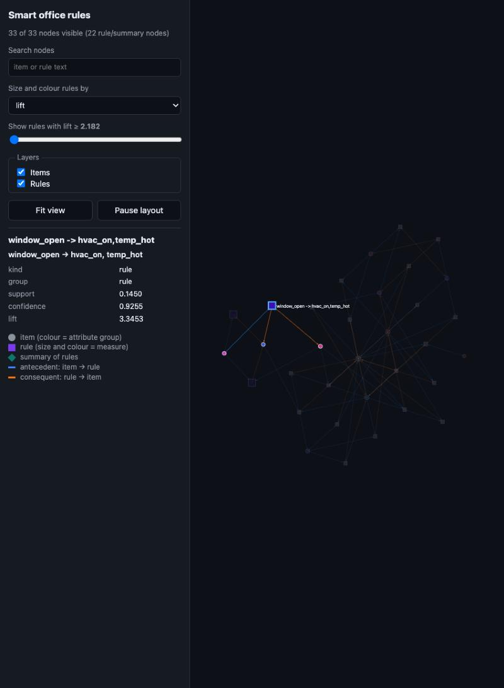

VizARM.AREtoGraph
Transforms a set of association rules into the VizARE typed graph, following:
Fernandez-Basso, C., Ruiz, M.D., Molina-Solana, M., Martin-Bautista, M.J. (2026). VizARE: An Intermediate Representation to Support the Visualization of Association Rules in Data Mining. Future Internet, 18(7), 374. See Citing ARMxtend.
Unlike a flat item-to-item graph (where an edge would join every antecedent item directly to
every consequent item, losing the rule's structure as soon as it has more than one item per
side), VizARE uses two node types -- item and rule -- connected by directed edges with an
explicit semantic role: antecedent (item -> rule) and consequent (rule -> item). A rule's
measures of interest (support, confidence, lift, ...) live as attributes of its own rule node,
not of an edge, and a rule with several antecedent/consequent items is simply a rule node with
several incoming/outgoing edges -- no ambiguity, no information lost.
Building the graph
AREtoGraph.from_dataframe(rules_df, rule_measures=("support", "confidence", "lift"))
The most convenient entry point: builds the graph directly from a rules pandas.DataFrame, in the
same format returned by ARM.association_rules or
FIM.FARE.fuzzy_association_rules (columns antecedents/consequents as
frozensets of items, plus one column per measure named in rule_measures).
from ARMxtend.ARM.association_rules import association_rules
from ARMxtend.VizARM import AREtoGraph
rules = association_rules(freq_itemsets_df, metric="confidence", min_threshold=0.5)
graph = AREtoGraph.from_dataframe(rules, rule_measures=("support", "confidence", "certainty_factor"))
Or build it rule by rule with add_rule(antecedent, consequent, measures) (Algorithm 1,
RulesToGraph, of the paper) -- useful when the rules don't come from a DataFrame:
graph = AREtoGraph()
graph.add_rule(["temperature_cold", "occupation_low"], ["hvac_off"],
measures={"support": 0.31, "confidence": 0.87})
Item nodes get a group attribute -- the attribute name of the item, used by the paper for
indexing/visualization -- inferred by default from the attribute_value naming convention already
used by preprocessing.FuzzyLib (e.g. "temperature_cold" ->
group "temperature"); pass your own item_group_fn(item) -> str to add_rule/from_dataframe
to override it.
Alternatively, AREtoGraph(path, MeasuresRules, MeasuresItems=None, SepRule=";", SepFI=";",
SepItems=",") loads rules from a CSV file with antecedents/consequents columns (items joined
by SepItems) plus one column per measure in MeasuresRules; load_item_measures(path) attaches
per-item measures (e.g. support) from a second CSV.
Rule summarization (optional)
graph.summarize(signature="antecedent_consequent", measures=("support", "confidence"))
Section 4.2 of the paper: when the rule set is large, inspecting one node per rule becomes
cluttered. summarize adds a summary node per group of rules sharing the same signature
("antecedent", "consequent", or "antecedent_consequent", the default), aggregating each
measure's min/max/mean/quantiles across the group and keeping a members list of the
original rule ids for drill-down. Summary nodes connect to the same item nodes, with the same
antecedent/consequent semantics as regular rule nodes, so a visualization tool can render
either the full rule-level graph or the summarized one:
for summaryId in graph.summarize(signature="consequent"):
data = graph.graph.nodes[summaryId]
print(data["rule_count"], "rules ->", data["members"])
Interactive viewer
graph.to_html("rules.html", title="Smart office rules", max_rules=150, sort_by="lift", measure="lift")
Writes a single, self-contained HTML file -- no CDN, no server, no network access: it opens in any
browser, can be e-mailed or archived, and embeds the graph itself in the paper's JGF format
(to_jgf_dict()), so the viewer consumes exactly the intermediate representation.

What you get:
- automatic force-directed layout; zoom (scroll), pan (drag the background), pin a node by dragging it (double-click to release);
- hover tooltips and a details panel with the readable rule (
A, B -> C) and all its measures; selecting or hovering a node highlights its neighbours and dims the rest; - search (Enter centres on the first match), minimum-value slider for any rule measure, and size/colour of the rules by that measure;
- switches for the item / rule / summary layers (see Rule summarization); summary nodes list their member rules as links.
Arguments: path (write the file), title, max_rules + sort_by (keep only the best max_rules
rules by that measure, with their items and the summaries they belong to), measure and min_value
(initial measure and threshold). The layout uses a spatial grid for repulsion, so thousands of nodes
stay interactive (about 3,300 nodes / 16,000 edges ran at roughly 48 fps in our test), but a graph with
that many edges is a hairball for human eyes: use max_rules, the threshold slider or the summaries
to explore large rule sets.
Graph and document databases
The paper (Section 4.3) stores the intermediate form natively in Neo4j or MongoDB:
graph.to_cypher() # CREATE (:Item {...}); CREATE (:Rule {...}); ... (:ANTECEDENT / :CONSEQUENT) relationships
graph.to_documents() # {'nodes': [{'_id': ..., 'kind': ..., 'confidence': ...}], 'edges': [...]}
to_cypher() returns statements ready for cypher-shell or the Neo4j browser (strings are escaped);
to_documents() returns flat documents with the measures as top-level fields so they can be indexed and
queried ({"kind": "rule", "confidence": {"$gte": 0.8}}) after collection.insert_many(...). Both
accept max_rules/sort_by.
Exporting
graph.exportGraph(type=0) # JGF (JSON Graph Format) -- the paper's proposed intermediate form
graph.exportGraph(type=1) # GraphML string (Gephi / Cytoscape / NetworkX)
graph.exportGraph(type=2) # DOT string (Graphviz)
graph.exportGraph(type=3) # the underlying networkx.DiGraph
JGF (also available directly as graph.to_jgf() / graph.to_jgf_dict()) is the format proposed by
the paper as an interoperability layer between rule-mining algorithms and visualization tools --
it can be stored as-is in a document database (MongoDB) or loaded into a graph database (Neo4j) for
querying, and is natively understood by graph-visualization libraries such as
D3.js, Bokeh, Gephi or
NetworkX:
graph = AREtoGraph.from_dataframe(rules)
print(graph.to_jgf())
# {
# "graph": {
# "directed": true,
# "type": "association-rules",
# "nodes": {
# "A": {"label": "A", "metadata": {"kind": "item", "group": "A"}},
# "rule::A=>C": {"label": "A -> C", "metadata": {"kind": "rule", "support": 0.4, "confidence": 0.8, ...}}
# },
# "edges": [
# {"source": "A", "target": "rule::A=>C", "relation": "antecedent", "metadata": {}},
# {"source": "rule::A=>C", "target": "C", "relation": "consequent", "metadata": {}}
# ]
# }
# }
Write the GraphML/DOT result to a .graphml/.dot file to open it in your graph visualization
tool of choice, or work with the networkx.DiGraph (type=3) directly for further analysis
(centrality, community detection, ...) using networkx.